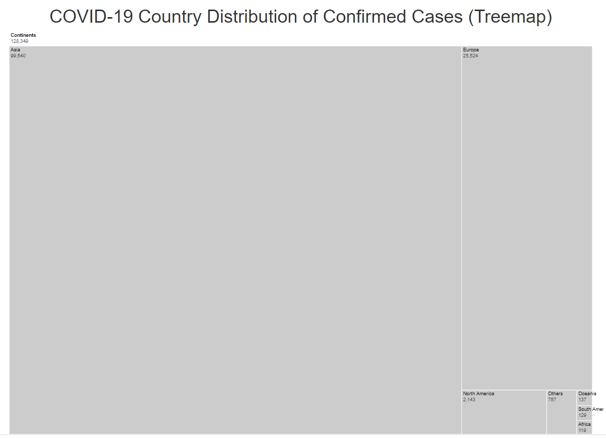
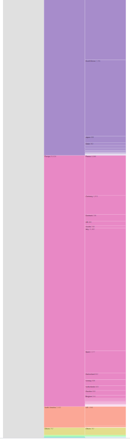

CS5346 - COVID-19 Project Assignment
“No man is an Island, entire of it self; every man is a piece of the Continent, a part of the main.”
-John Donne (1624), “Devotions upon Emergent Occasions”
| Visualization Name | Preview | Description |
|---|---|---|
| Country Nested Tree Map of Confirmed Cases |  | What is the extent of the Covid-19 infection? Explore the relative sizes of the infections in the various continents/countries. |
| Country Icicle Chart of Confirmed Cases |  | How many cases are there China compared to the rest of the world? Do we have an intuitive way to “feel” the size of the impact? |
| World Map View of COVID-19 |  |
Which countries are affected and where in the world are they at? |
| COVID-19 age-gender density vs Country Age-gender density |  |
Is it true that males or females are more susceptible to the disease? Is it affecting all ages equally? |
| Top 15 countries (by cases vs by percentage of population) |  |
Which countries have it worst? Is it still true when we take their full population into account? |
| COVID-19 Progression Timeline |  |
Are we out of the weeds yet? Are countries getting better or worse? |